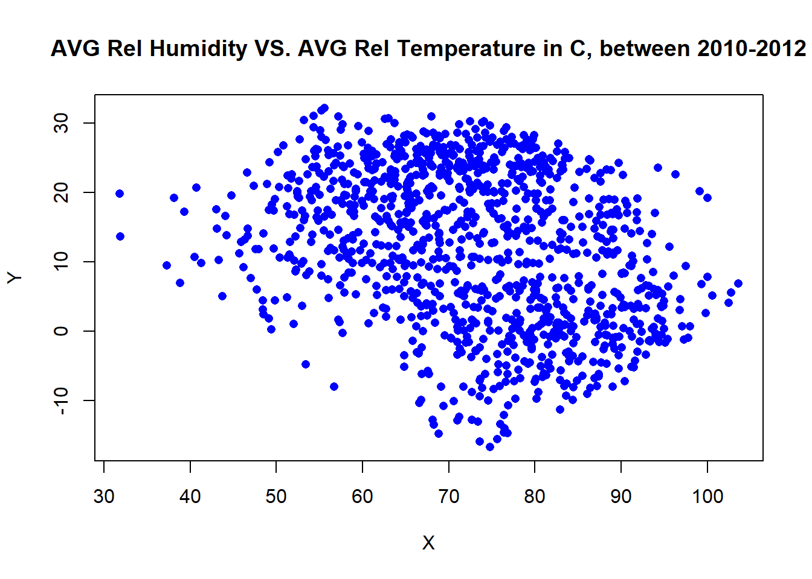
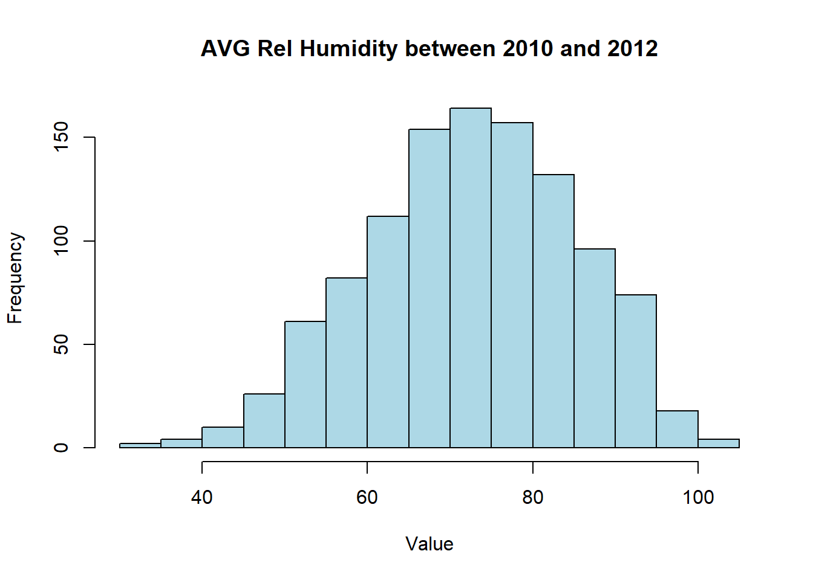

# <<cache=F, fig.width=6, fig.height=4>>=
# install.packages("tidyverse")
library(tidyverse)
library(dplyr)
library(magrittr)3 Chapter 1: Introduction to R
3.1 Section 1. Getting Started With R
R is an integrated suite of software facilities for data manipulation, calculation and graphical display. Among other things it has
an effective data handling and storage facility,
a suite of operators for calculations on arrays, in particular matrices,
a large, coherent, integrated collection of intermediate tools for data analysis,
graphical facilities for data analysis and display either directly at the computer or on hard copy, and a well developed, simple and effective programming language (called ‘S’) which includes conditionals,
loops, user defined recursive functions and input and output facilities. (Indeed most of the system supplied functions are themselves written in the S language.)
The term “environment” is intended to characterize it as a fully planned and coherent system, rather than an incremental accretion of very specific and inflexible tools, as is frequently the case with other data analysis software. R is very much a vehicle for newly developing methods of interactive data analysis. It has developed rapidly, and has been extended by a large collection of packages. However, most programs written in R are essentially ephemeral, written for a single piece of data analysis.
3.1.1 Environment Setup
Before you start, you want to do these 3 things first:
Install R R is a programming language
Install RStudio RStudio is the most widely-used IDE for R
Install tidyverse tidyverse is the collection of packages that are widely used for data analysis. The detailed introduction to tidyverse can be found in Section 1.2. You can use the below command in R to install tidyverse
The pipe operator
The %>% operator, also known as the “pipe operator”, is a powerful feature introduced by the
magrittrpackage in R. It allows for a more readable and concise way of chaining together multiple function calls or operations. The pipe operator facilitates the creation of efficient and streamlined data analysis pipelines.# Using pipe operator to integrate commands example <- data.frame(x = c(1, 2, 3, 4, 5), y = c(2, 4, 6, 8, 10)) # Calculate the mean of y for rows where x is greater than 2 mean_y <- example %>% subset(x > 2) %>% pull(y) %>% mean() # Print the mean print(mean_y)
3.1.2 Introduction to Packages
In R, “packages” are collections of functions, data, and documentation designed to extend the functionality of the base R system. These packages serve as valuable tools that provide specialized capabilities, making complex tasks easier to accomplish and expanding the scope of data analysis and statistical modeling. Each package is designed to address specific data analysis needs, making it easier for users to perform tasks from different disciplines.
Using packages in R is a seamless process. Once a package is installed, you can load it into your R session using the library() function. This makes all the functions and datasets within the package available for use. The packages and collections covered in this book are listed below. Most of them are integrated into the tidyverse collection.
MASS The “MASS” package includes various functions for statistical modeling, linear and nonlinear regression, generalized linear models, time series analysis, clustering, and more. Additionally, it offers datasets used in the book’s examples and exercises, allowing users to replicate and experiment with the presented statistical methods.
Tidyverse The `tidyverse` package is a collection of R packages that provides a consistent and coherent framework for data manipulation, exploration, and visualization, promoting a tidy data format and streamlined data analysis workflows. The core packages within the `tidyverse`, including `dplyr`, `ggplot2`, `tidyr`, `readr`, `lubridate`, `magrittr` and `purrr`, among others, offer powerful tools for data import, transformation, visualization, and modeling.
magrittr The
magrittrpackage provides a set of operators, most notably the pipe operator%>%, that enhances code readability and promotes a more fluent programming style in R. By chaining functions together, `magrittr` allows users to create a more structured and expressive data manipulation workflow.ggplot2 `ggplot2` is a versatile and comprehensive data visualization package based on the Grammar of Graphics. With `ggplot2`, users can effortlessly create sophisticated and aesthetically pleasing visualizations that effectively communicate insights from their data.
dplyr `dplyr` is a powerful package designed for data manipulation tasks in R. With a concise syntax and intuitive functions like `filter()`, `arrange()`, `mutate()`, and `summarise()`, `dplyr` simplifies and streamlines data wrangling, making it an essential tool for data analysts and data scientists.
lubridate `lubridate` is a package specifically tailored for working with dates and times in R. Its user-friendly functions enable users to parse, manipulate, and format date-time data, making time-related analysis and data manipulation tasks more efficient and accurate.
readr `readr` is a fast and efficient package for reading and importing data into R. By providing easy-to-use functions to read various file formats, readr simplifies the data reading process and ensures accurate representation of data, enabling smoother data analysis workflows.
3.1.3 Variables
You can create variables like in all other programming languages using “-{” or “=”
x <- 21
print(x)[1] 21x <- "text"
print(x)[1] "text"3.1.4 Numbers and Vectors
You can also assign numeric values or vectors to your variables
- Numbers can be in many forms
# Create numbers in r
x <- 3.5 # numeric
y <- 3L # integer
z <- 1i # complex- Vectors
# Using the combine operator `c()` in r
u <- c(1,1,2,3,5)
# Using the sequence operator `:` in r
v <- 1:5
print(u) [1] 1 1 2 3 5print(v)[1] 1 2 3 4 5# length of vectors
length(u)[1] 53.1.5 Strings and Boolean
Other types of variables include strings and booleans
- String
# String
s <- "This is a string"
print(s)[1] "This is a string"- Boolean
# Boolean
a <- TRUE
b <- (1 > 2)
print(a) [1] TRUEprint(b)[1] FALSE3.1.6 Working with Dates
Working with dates is supported by R. Date is a specific type of object implemented in R and supplemented by other packages such as lubridate
- Date formatting
# Date formatting
date <- as.Date("2023-07-10")
formatted_date <- format(date, "%A, %B %d, %Y")
print(formatted_date)[1] "Monday, July 10, 2023"# test- Date manipulation
require(lubridate)Loading required package: lubridateWarning: package 'lubridate' was built under R version 4.3.3
Attaching package: 'lubridate'The following objects are masked from 'package:base':
date, intersect, setdiff, union# Adding days to a date
date <- as.Date("2023-07-10")
new_date <- date + 7
print(new_date)[1] "2023-07-17"# Subtracting months from a date
date <- as.Date("2023-07-10")
new_date <- date - months(3)
print(new_date)[1] "2023-04-10"# Calculating the difference between two dates
date1 <- as.Date("2023-07-10")
date2 <- as.Date("2023-06-10")
diff <- date1 - date2
print(diff)Time difference of 30 days3.2 Section 2. Fundamentals
To perform meaningful tasks, you need to use operators, functions and loops smartly
3.2.1 Math and Logical Operators
- Fundamental operators
# plus, minus, multiply and subtraction
x <- 1
y <- 2
# print multiple arguments together using `cat`
cat(x+y, x-y, x*y, x/y)3 -1 2 0.5- Logarithm and exponential
# print exp(2) and log(1)
cat(exp(y), log(x))7.389056 0- Operations on vectors
# compute the vector max,min and median
u <- c(-1, 0, 3, -12.5, 8.3)
cat(max(u), min(u), median(u))8.3 -12.5 0# compute the sum and length
cat(sum(u), length(u))-2.2 5- Logical operators
# and or
x <- TRUE
y <- FALSE
cat(x && y, x || y)FALSE TRUE3.2.2 Functions
Functions in R are blocks of organized code designed to perform specific tasks, allowing you to efficiently reuse and modularize your code.
# Write a function that calculates the correlation between 2 vectors of the same length
my_function <- function(v1, v2) {
# add a guard clause for the input
if (length(v1) != length(v2)) {
stop("input vectors have different lengths")
}
mean1 <- mean(v1)
mean2 <- mean(v2)
numerator <- sum((v1 - mean1) * (v2 - mean2))
denominator <- sqrt(sum((v1 - mean1)^2) * sum((v2 - mean2)^2))
correlation <- numerator / denominator
return(correlation)
}
my_function(c(1,3,5,7), c(2,4,6,8)) # call the function named my_function[1] 13.2.3 If/Else Statements
# Example: Determine if a number is even or odd
num <- 7
# use the mod operator `%%`
if (num %% 2 == 0) {
result <- "Even"
} else {
result <- "Odd"
}
# print text and variables together using `cat`
cat("The number", num, "is", result)The number 7 is Odd3.2.4 Loops
Loops in R, such as for and while, enable iterative execution of code for efficient repetitive tasks.
# Use a for loop to print the first 10 elements of the Fibonacci sequence
for (i in 1:10) {
if (i == 1 || i == 2) {
prevprev = 1
prev = 1
cat(1, " ")
} else {
curr = prevprev + prev
cat(curr, " ")
prevprev = prev
prev = curr
}
}1 1 2 3 5 8 13 21 34 55 # Use a while loop to find all the divisors of 336
n = 336
divisor = 2
while (divisor <= sqrt(n)) {
if (n %% divisor == 0) {
cat(divisor, ' ') # Found a divisor, print it out
}
divisor <- divisor + 1
}2 3 4 6 7 8 12 14 16 3.3 Section 3. Data Fundamentals
3.3.1 Lists
We can store data in a list:
# List of strings
thislist <- list("apple", "banana", "cherry")
# Print the list
print(thislist)[[1]]
[1] "apple"
[[2]]
[1] "banana"
[[3]]
[1] "cherry"# access a list element
print(thislist[1])[[1]]
[1] "apple"# access multiple elements
print(thislist[1:2])[[1]]
[1] "apple"
[[2]]
[1] "banana"3.3.2 Matrices and Arrays
3.3.3 Manipulating Matrices and Arrays
You can access, edit, do operations and even combine matrices and arrays using the parsing technique
3.3.4 Dataframes
Dataframe is a powerful object that allows you to perform all kinds of operations on your data
# create a dataframe
Data_Frame <- data.frame (
Training = c("Strength", "Stamina", "Other"),
Pulse = c(100, 150, 120),
Duration = c(60, 30, 45)
)
# Print the data frame
Data_Frame Training Pulse Duration
1 Strength 100 60
2 Stamina 150 30
3 Other 120 45# access dataframe elements using the dollar sign
print(Data_Frame$Pulse)[1] 100 150 1203.4 Section 4. Read/Load/Output Data
Read data from local files, load data from online source, write data into local files.
3.4.1 Read Data
# Load text file
data <- read.csv("data/CMI_TRH.csv")
head(data, 5) X year month day avg_rel_hum avg_air_temp_f avg_air_temp_c date_string
1 1 1989 2 16 87.7 26.6 -3.0000000 1989-2-16
2 2 1989 2 17 89.4 26.4 -3.1111111 1989-2-17
3 3 1989 2 18 88.0 27.1 -2.7222222 1989-2-18
4 4 1989 2 19 96.7 32.5 0.2777778 1989-2-19
5 5 1989 2 20 100.0 34.5 1.3888889 1989-2-20
date
1 1989-02-16
2 1989-02-17
3 1989-02-18
4 1989-02-19
5 1989-02-203.5 Plots and Graphics
3.5.1 Basic Plots
The built-in plot function in R allows you to create scatter plots, line charts and other common graphics for statistical analysis.
scatter plot
library(tidyverse)Warning: package 'tidyverse' was built under R version 4.3.3Warning: package 'tidyr' was built under R version 4.3.3Warning: package 'readr' was built under R version 4.3.3Warning: package 'purrr' was built under R version 4.3.3Warning: package 'forcats' was built under R version 4.3.3── Attaching core tidyverse packages ──────────────────────── tidyverse 2.0.0 ──
✔ dplyr 1.1.4 ✔ readr 2.1.5
✔ forcats 1.0.0 ✔ stringr 1.5.1
✔ ggplot2 3.4.4 ✔ tibble 3.2.1
✔ purrr 1.0.2 ✔ tidyr 1.3.1
── Conflicts ────────────────────────────────────────── tidyverse_conflicts() ──
✖ dplyr::filter() masks stats::filter()
✖ dplyr::lag() masks stats::lag()
ℹ Use the conflicted package (<http://conflicted.r-lib.org/>) to force all conflicts to become errorslibrary(dplyr)
library(magrittr)
Attaching package: 'magrittr'
The following object is masked from 'package:purrr':
set_names
The following object is masked from 'package:tidyr':
extract# Select average humidity and date
data_between_2010_2012 <- data %>%
filter(year >= 2010 & year <= 2012)
# Create a scatter plot
plot(data_between_2010_2012$avg_rel_hum, data_between_2010_2012$avg_air_temp_c, main = "AVG Rel Humidity VS. AVG Rel Temperature in C, between 2010-2012", xlab = "X", ylab = "Y", pch = 16, col = "blue")
histogram and bar plot
# Create a histogram
hist(data_between_2010_2012$avg_rel_hum, main = "AVG Rel Humidity between 2010 and 2012", xlab = "Value", ylab = "Frequency", col = "lightblue")